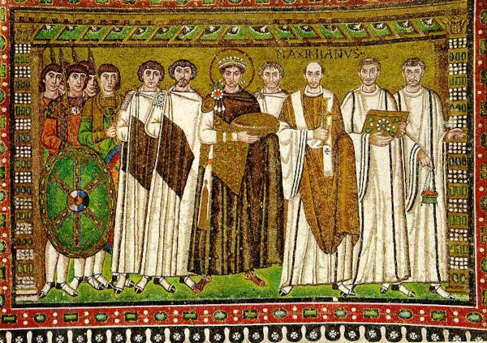
Mosaico do Imperador Justiniano I e sua corte — Basílica de San Vitale, séc. VI
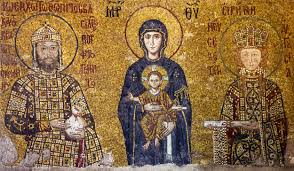
Mosaico da Virgem Maria com o Menino Jesus e imperadores — Hagia Sophia, séc. X
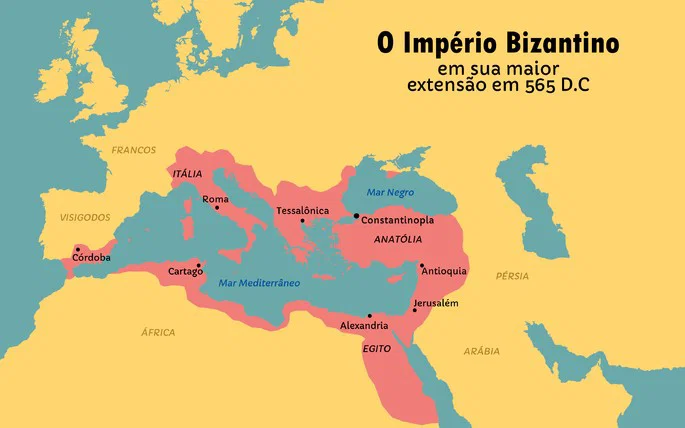
Mapa do Império Bizantino em sua maior extensão — 565 d.C.
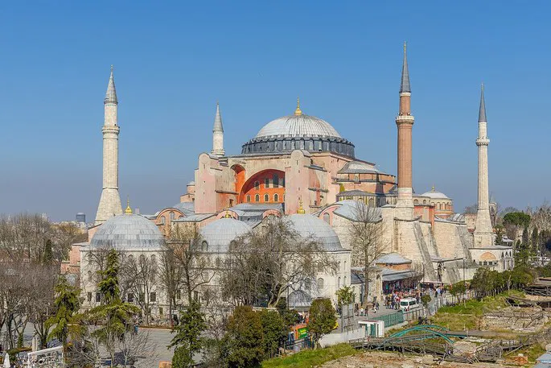
Basílica de Santa Sofia (Hagia Sophia) — Constantinopla, 537 d.C.
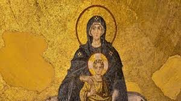
Mosaico da Virgem Theotokos (Mãe de Deus) — arte sacra bizantina, séc. XII
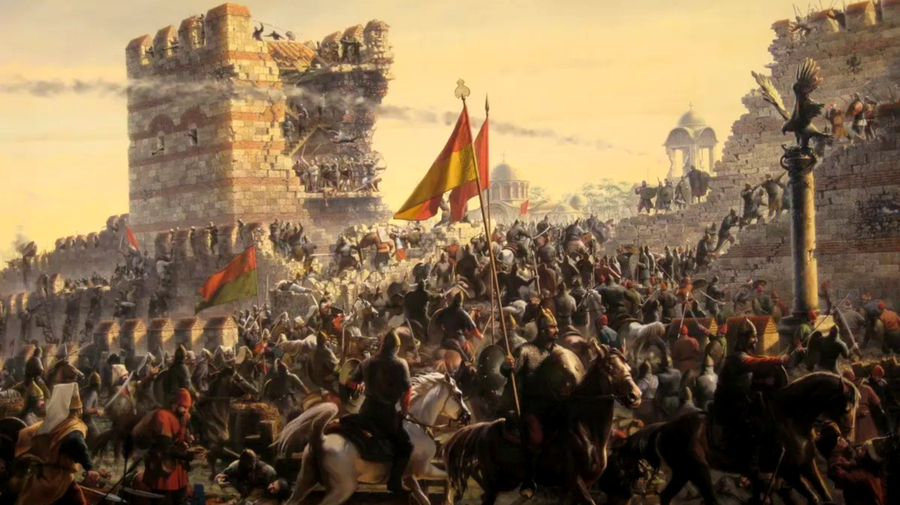
Pintura retratando a Queda de Constantinopla — 29 de maio de 1453
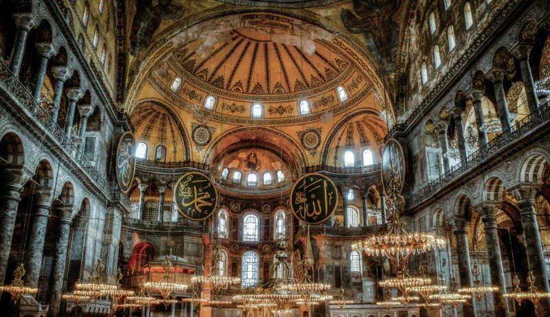
Interior monumental da Basílica de Santa Sofia — cúpula e arcadas douradas
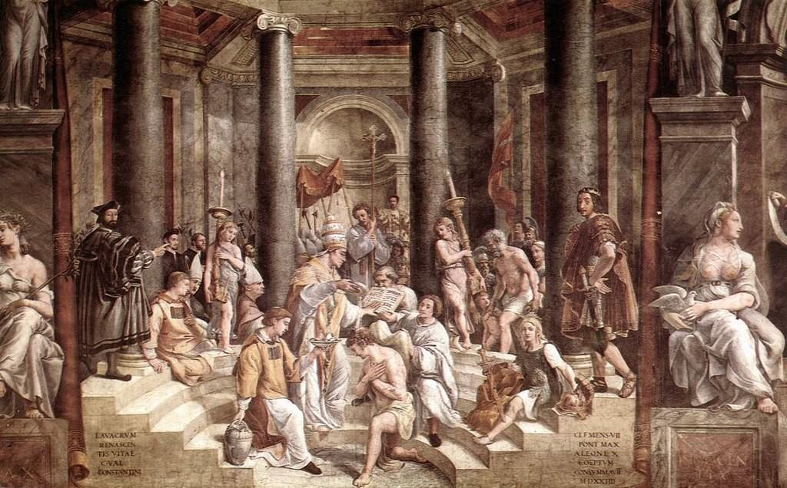
Afresco do Batismo de Constantino — Stanze di Raffaello, Vaticano, séc. XVI
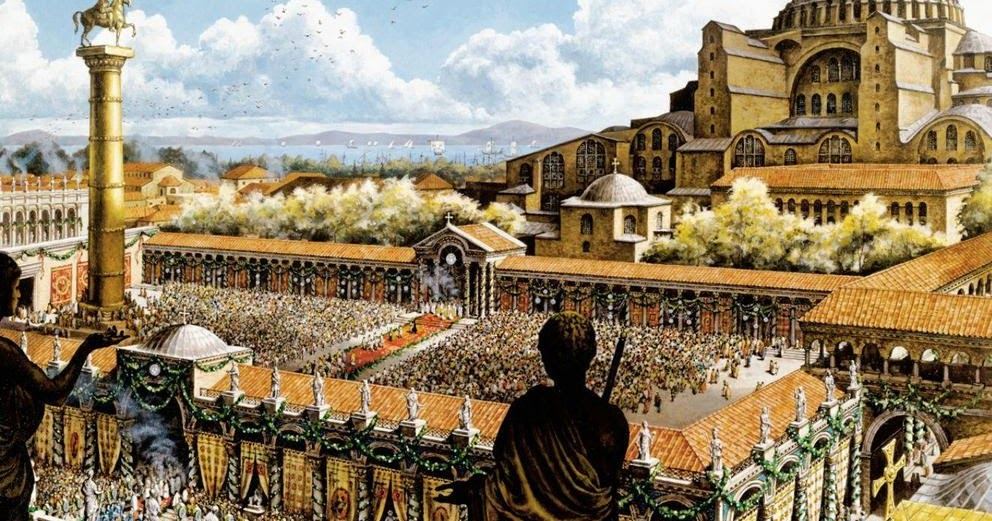
Reconstituição artística de Constantinopla e o Hipódromo Imperial
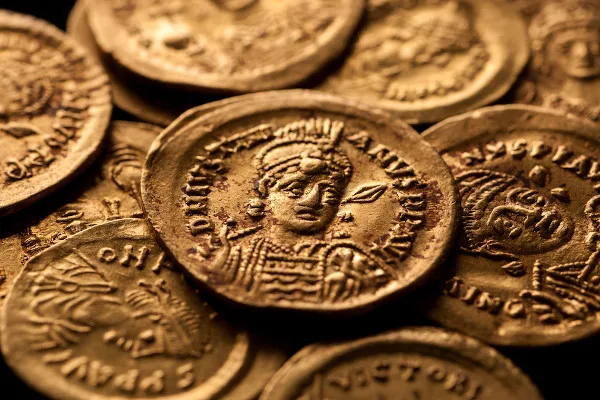
Solidus: moedas de ouro bizantinas com efígies imperiais — séc. V–VI
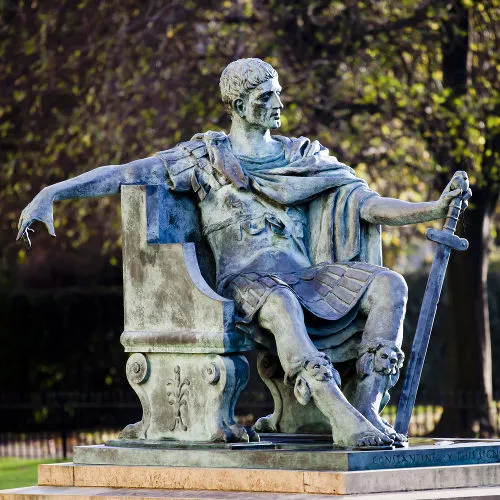
Estátua de Constantino I, o Grande — fundador de Constantinopla
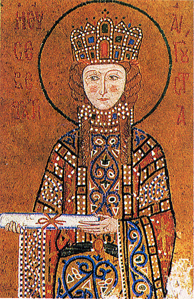
Ícone imperial em mosaico dourado — imperador com coroa e vestes cerimoniais
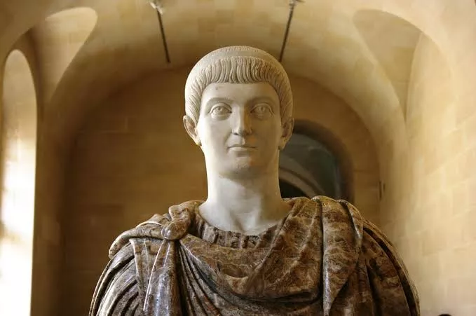
Busto de Constantino I no Museu do Louvre — séc. IV d.C.
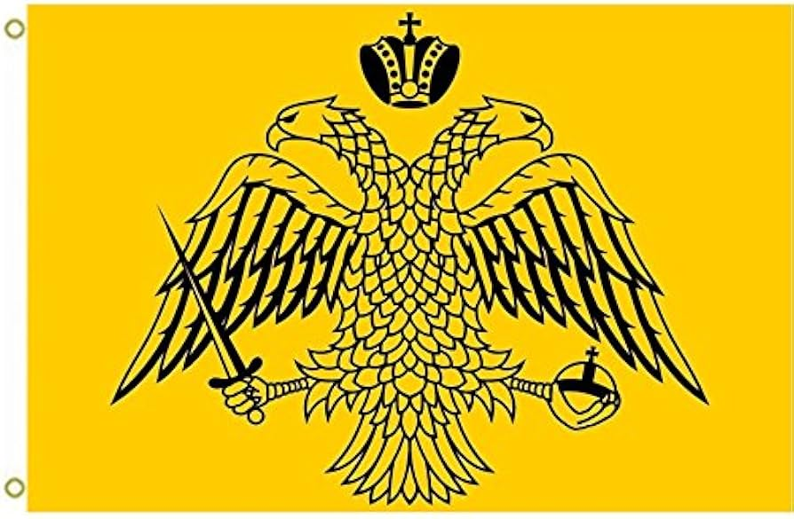
Bandeira do Império Bizantino — Águia Bicéfala, símbolo imperial
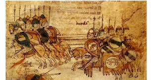
Manuscrito iluminado: batalha de cavalaria do Exército Bizantino — séc. X
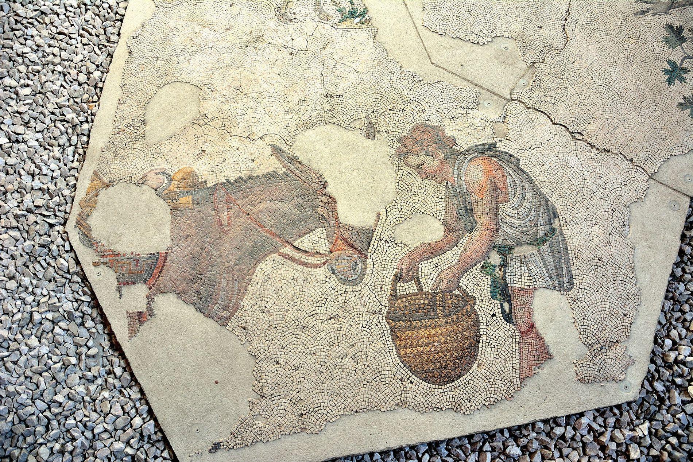
Mosaico de cena cotidiana — homem com jumento, Villa Romana del Casale, séc. IV
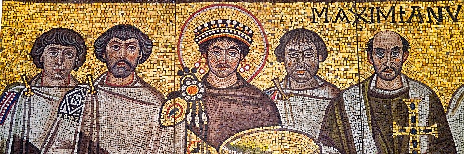
Detalhe do mosaico de Justiniano I — Basílica de San Vitale, Ravenna, séc. VI
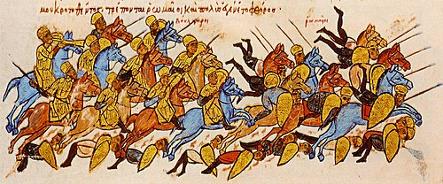
Miniatura de batalha de cavalaria do Skylitzes de Madrid — séc. XII
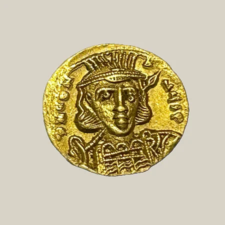
Solidus de ouro com efígie imperial — moeda oficial do Império Bizantino